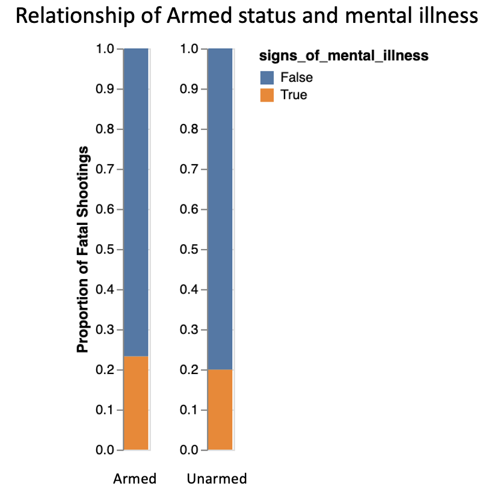

In the past decade, particularly since the 2014 murder of Michael Brown in Ferguson, Missouri, police brutality has become a topic of heated debate in the U.S, especially as the rate of police killings of civilians is much higher in the U.S. than comparable countries like Canada, Australia, and the U.K.. The Black Lives Matter movement has been working tirelessly and persistently to raise awareness of police brutality in America, by leading marches and demonstrations to protest the disproportionate killings of Black men and women by police officers. More recently, in 2020, largely in response to the murders of George Floyd and Breonna Taylor by police officers, the movement led a wave of countrywide protests calling for reform in police departments around the country. The ultimate goal of this project is to investigate the location concentrations of police killings in the country, as well as to analyze how body cam usage has changed over time, and to examine the relationship between shootings that have occurred and factors such as race, age and gender, and mental health in order to identify disproportionalities, and provide a context of data for police brutality. We hope for this project to effectively and expressively display trends and patterns of police officers in this country particularly discriminating against black and brown men and women, as well as individuals experiencing mental health distress, in order to inform future policy and incite reform in police departments across the country.
It is firstly important to examine the trends of fatal police shootings as a phenomenon in the country that has only been increasing over the past decade, especially when compared to other countries. The chloropleth map below showcases the rate of police killings per 100,000 civilians in each state across all races for the years 2015-2021. You can select the state you want to highlight, hover over states to see the exact rate number, drag around the map and zoom in or out, and select the year for which you want to see data. You can see that in 2015, Wyoming had the highest rate of fatal police shootings per 100,000 people. In 2016, New Mexico had the highest rate; in 2017, Maine had the highest rate; in 2018, Alaska had the highest rate; in 2019, Vermont had the highest rate; in 2020, Alaska had the highest rate again, and in 2021, Delaware had the highest rate of fatal police shootings per 100,000 people. Since the U.S. government does not keep a public database on police killings of civilians, we acquired the data for this project from the Washington Post, and it is possible that some data for certain states and/or years is missing from the database.
To showcase the widespread and persistent nature of brutal police force in this country, police killings of unarmed individuals in the U.S. since 2015 are mapped below, and colored according to the race of the victim, with exact locations marked by latitude and longitude and also classified by city names. The map also shows the full name of the victim. You can drag to navigate around the map, zoom in and out to see incidents within state boundaries more closely, and select a state to highlight. The concentration of incidents appears to be particularly high in the southern and southeastern regions of the country. The state of California accounts for the highest amount of police killings of unarmed individuals in the country since 2015, with Black and Hispanic people representing over 70% of victims. The state of Texas accounts for the second highest amount of police killings of unarmed individuals in the country since 2015, with Black and Hispanic people representing over 60% of victims. The state of Florida accounts for the third highest amount of police killings of unarmed individuals in the country since 2015, with Black and Hispanic people representing over 70% of victims. These killings are geographically mapped so as to see trends and concentrations in regions around the country, as well as concentrations in states and individual cities, in order to bring attention to these incidents occurring especially frequently in certain states and cities. This is intended to incite viewers to hold state officials and city/county police departments accountable that continue to allow law enforcement to use fatal force, especially toward black and brown men and women at disproportionate rates. As previously stated, some data is missing for certain incidents mapped, and so some fields (i.e. name, race) may be blank, or be labeled “undefined”.
To better understand the data, we looked at simple demographic information, including race, gender, and age. By comparing the distribution of age and gender for each race, we can gain insight into similarities and/or disparities among police treatment of certain races.
While these visualizations show that a plurality of incidents had white victims, that is by total incident count only; according to PNAS, African Americans face nearly twice the per capita police shooting risk of white Americans. Each race showed similar distributions of age and gender, albeit with a small sample size on some of the data points. The demographics support our assumption that young men would make up the majority of cases. Prior intuition also supports the fact that white victims were only slightly more numerous than black victims, despite being a much larger portion of the overall population, as supported by the PNAS study linked above.
While investing cases of fatal police shootings, it is clear that having body camera evidence can make a huge difference in the bringing justice to victims involved. The use of body cameras “increase the publics’ trust and confidence in law enforcement as well as bring a quicker resolution, improves officer safety, and prevent crime” as mentioned in a LA TECH article. Knowing all of the benefits of using body cameras, have the use of them increased over time? To investigate this we plotted all counts of body camera data for fatal shooting cases since 2015 and separated the instances into the body cams being off and on.
From this visualization we can see that although since 2015 the federal government has provided over $23 million dollars to expand the use of body cams, in theses cases, they were usually turned off. There is slight increase of body cameras being on for more cases in months of widely known cases. This could be attributed to the increased news and public awareness during those moments in time.
Wanting to find out how mental illness impacts patterns in fatal police shootings we decided to first investigate the count differnce between unarmed and armed individuals along with whether or not they were reported to have signs of mental illness.
From the figure above we see that there is significantly more cases of people involved in fatal police shootings that were armed. Though it is very important to note that if an individual had any sort of “weapon” they could use, they would be counted as armed. For example other than guns, some cases reported to have people being armed with cars, wasp spray, a walking stick, a wrench, and much more. Additionally, as we look into the relationships of signs of mental health, it can be noticed that there doesen’t seem to be any discrepriancies of significance.
Though lets take a deeper look into this and see if this narrative still lines up when we take into account proportions of these incidents in a figure that uses a normalized range. From this figure we can take a much better look at the relationship between signs of mental health and armed status usuing proportion instead of just count of records. Though it does not reveal any variance in the fatal shootings of people who have displayed signs of mental illness who were or were not armed.
There weren’t any revealing patterns fo$r mental health in regards to armed status, next we will investigate whether or not their are any correlatiions with signs of mental illness and race.
In this figure you can select difference races to highlight and veiw the proportion of which that race belongs to from the dataset. Most notably white individuals increase in proportion of occurances for fatal police shootings when comparing no signs of mental illness (false) to individuals with signs of mental illness (true). In general it is observed that other races are subjected to higher rates of incidents when no signs of mental illnesss are present.
From our investigation we were able to learn more about the patterns in police shootings in the US. When it comes to the concentrations of killings over the last six years, the rate of police killings per 100,000 civilians in each state across all races for the years 2015-2021 has changed but most recently was the highest in Delaware for 2021. Additionally, when looking at locations of unarmed victims that were killed, the state of California accounted for the highest amount of police killings since 2015. While exploring the relations between race, gender, and age and police killings it was found that each race showed similar distributions of age and gender, but this could be attributed to small sample size in some areas. Additionally, young men make up the majority of cases. In investigating how many cases had body cameras were on in between 2015 and 2021, it was found that the majority of the cases every year had body cameras off. A slight increase in having body cams on was seen following very publicaly known cases. Lastly, when looking into cases that involved mentally ill victims and whether they were armed, there weren’t any significant patterns for mental health in regards to armed status. However, when the correlation between signs on mental illness and race were looked at, there was a notable increase in proportion of occurances for fatal shootings with white indiviudals with signs of mental illness. For all other races, individuals with no signs of mental illness were subjected to higher rates of police shootings.
From these findings it is clear that there continues to be a lot of work done to combat the acts of violence towards black and brown lives in America. To learn more and support the movement visit the Black Lives Matter website.